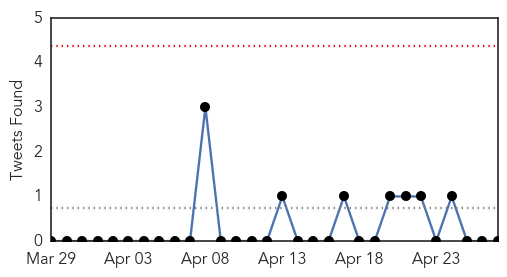
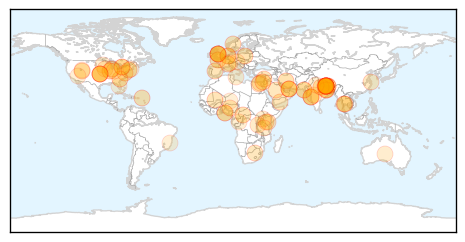
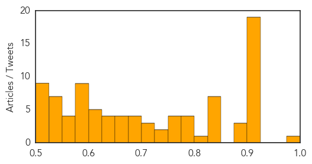

Toggle navigation
Early Warning
Daily Alerts
Unknown
Apr 27, 2015
Compare to:
-
Dengue Fever
Hemmorhagic Fever
Mold/Fungal Infection
Influenza
Meningitis
Pertussis / Whooping Cough
Middle East Respiratory Syndrome
Cholera
Hepatitis
Chikungunya
Yellow Fever
Bubonic Plague
West Nile Virus
Swine Flu
Ebola
Measles
Mumps
30 Day Trends
Web: 0
alerts
, 0
warnings
Twitter: 0
alerts
, 0
warnings
Top Articles:
Showing top 50 articles...
0.984
TYPHOID FEVER OUTBREAK IN UGANDA
0.917
Chicago Tribune
0.917
Chicago Tribune
0.917
Chicago Tribune
0.917
Chicago Tribune
0.917
Chicago Tribune
0.917
Chicago Tribune
0.917
Chicago Tribune
0.917
Chicago Tribune
0.917
Chicago Tribune
0.917
Chicago Tribune
0.917
Chicago Tribune
0.917
Chicago Tribune
0.917
Chicago Tribune
0.917
Chicago Tribune
0.917
Chicago Tribune
0.910
The world windows to Thailand
0.910
The world windows to Thailand
0.907
First malaria vaccine on its way, will reach markets in October
0.907
More Indian doctors, public health experts on way to earthquake hit Nepal
0.887
KUNA : UN agencies step up response to Nepal quake
0.883
World Malaria Day: Red Cross and partners continue the battle against the number one killer in the Central African Republic - Central African Republic
0.881
Experts from AIIMS, Safdarjung Hospital to Assess Health Situation
0.847
Norovirus Outbreak Reported on Coral Princess
0.842
HHS issues final recommendation for community water fluoridation
0.837
Rabies Returns to France After a Decade of Eradication
0.831
Deadly KISSING PARASITE sneaks in beds and bites YOUR face in night is invading Britain
0.831
Humanitarian crisis in the Central African Republic: lack of funding threatens the free-access to healthcare - Central African Republic
0.828
Experts from AIIMS, Safdarjung hospital to head to Nepal
0.828
Jeb Bush: No hace falta gastar mil millones de dólares en una campaña
0.815
Disinfectants in water tanks caused Nile Delta mass poisoning: Prosecution
0.788
Aid agencies prepare 'massive' operations in quake-hit Nepal
0.788
Aid agencies prepare 'massive' operations in quake-hit Nepal
0.785
Five deadly parasites that have crossed the globe
0.781
World Immunization Week Aims to “Close the Immunization Gap” and Provide, in Africa, “a Gift for Life”
0.767
Majority of malaria victims are said to be Muslim
0.760
World Immunization Week Aims to “Close the Immunization Gap” and Provide, in Africa, “a Gift for Life”
0.760
World Immunization Week Aims to “Close the Immunization Gap” and Provide, in Africa, “a Gift for Life”
0.757
Nepal earthquake: authorities struggle to cope despite international aid efforts
0.739
China’s Future TB Rates Likely To Be Driven By The Elderly
0.728
Aid agencies prepare 'massive' operations in quake-hit Nepal
0.724
Feds Say It's Time To Cut Back On Fluoride In Drinking Water
0.720
Director Health for making Naegleria Committee functional
0.708
UN preparing 'massive' aid operation in quake-hit Nepal
0.700
Recovery must improve Nepal after the lethal earthquake
0.695
UN, WHO encourage progress against malaria
0.694
Recovery must improve Nepal after the deadly earthquake
0.685
23 dead from methanol poisoning
0.668
Minnesota declares state of emergency over bird flu outbreak
0.663
Study Shows That Augmenting a Gas Naturally in our Bodies Fights RSV Infection
Top Tweets:
No tweets found for Apr 27, 2015
Web/News Articles
Tweets

Article Locations

Article Confidences
